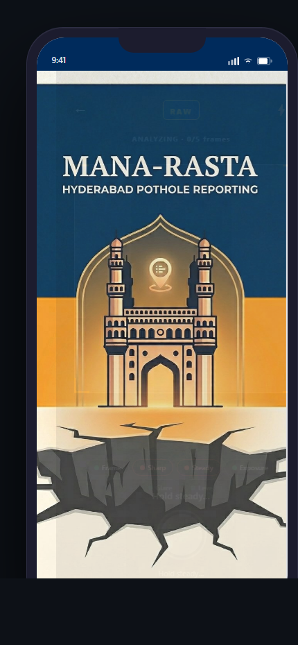
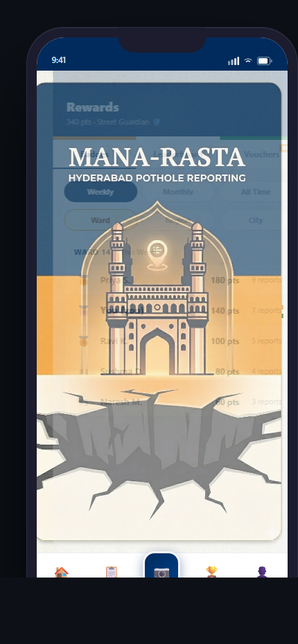
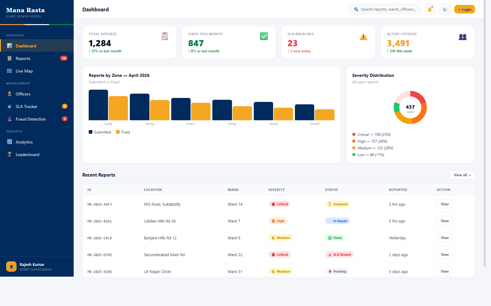

A civic reporting platform built to help Hyderabad residents report potholes with high-quality evidence, help administrators act faster, and create a stronger culture of civic responsibility through visible outcomes and well-governed incentives.
Potholes are a high-frequency, high-friction civic problem. Citizens need a fast way to report them. Administrators need structured, trustworthy, non-duplicate inputs they can actually process.
It transforms a vague civic complaint into a structured workflow: guided capture, validated location, severity tagging, operational review, analytics, and citizen-visible follow-through.
The platform treats citizens as active participants in city upkeep. Gamification is used as an incentive layer, not as a gimmick: it rewards valid reporting behavior while reinforcing public contribution.
Mana Rasta is already built as a multi-surface product: citizen mobile, capture workflow, success and tracking states, leaderboard/rewards, admin dashboard, backend services, and a dedicated image-analysis service.



The project includes a dedicated ML service focused on capture quality and pothole-focused analysis. Its role is not to replace operations. Its role is to reduce noise before reports enter the system.
Mana Rasta is designed as a pothole-first platform, but the same workflow model can support adjacent civic issues.
Image-based issue capture, location tagging, assignment, and status visibility.
Encroachment, breakage, accessibility issues, and surface damage reporting.
Severity and geo-aware reporting for rainfall and drainage-related incidents.
Open category expansion using the same citizen, admin, analytics, and abuse-control foundations.
The project already demonstrates meaningful scope: a citizen app, an admin dashboard, backend workflow layers, and an ML-assisted intake model. The next phase is not invention from zero. It is focused hardening, pilot rollout, and category expansion.
Mana Rasta combines civic responsibility, operational practicality, and well-governed incentives. It is built to improve not just reporting volume, but reporting quality, system trust, and municipal actionability.